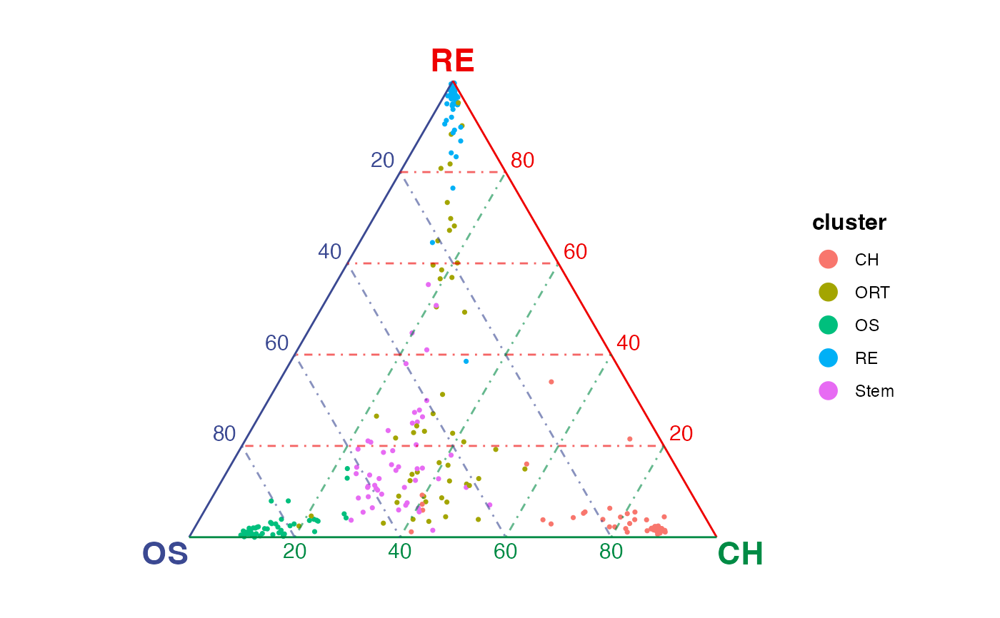

Create ternary plots that show similarity between single cells and selected three terminals in a ternary baricentric coordinate.
Usage
plotTernary(x, ...)
# S3 method for default
plotTernary(
x,
clusterVar,
vertices,
features = NULL,
veloGraph = NULL,
byCluster = NULL,
processed = FALSE,
method = c("euclidean", "cosine", "pearson", "spearman"),
force = FALSE,
sigma = 0.08,
scale = TRUE,
dotColor = "grey60",
returnData = FALSE,
...
)
# S3 method for Seurat
plotTernary(
x,
layer = "counts",
assay = NULL,
clusterVar = NULL,
processed = FALSE,
...
)
# S3 method for SingleCellExperiment
plotTernary(
x,
assay.type = "counts",
clusterVar = NULL,
processed = FALSE,
...
)
# S3 method for simMat
plotTernary(
x,
title = NULL,
veloMat = NULL,
nGrid = 10,
radius = 0.1,
dotSize = 0.6,
dotColor = "grey60",
labelColors = c("#3B4992FF", "#EE0000FF", "#008B45FF"),
vertexLabelSize = 5,
vertexLabelDrift = 0.03,
axisBreak = 5,
axisTextShow = TRUE,
axisTextSize = 4,
axisTextDrift = 0.02,
gridLineAlpha = 0.6,
arrowLinewidth = 0.25,
arrowAngle = 20,
arrowLen = 0.2,
titleSize = 14,
equilateral = TRUE,
margin = 0.1,
...
)Arguments
- x
Input data. Can be a
matrixordgCMatrixobject with cells as columns, aSeuratorSingleCellExperimentobject. "simMat" method takes intermediate values.- ...
Arguments passed to other methods.
- clusterVar
A vector/factor assigning the cluster variable to each column of the matrix object. For "Seurat" method,
NULL(default) forIdents(x), or a variable name inmeta.dataslot. For "SingleCellExperiment" method,NULL(default) forcolLabels(x), or a variable name incolDataslot.- vertices
Vector of three unique cluster names that will be used for plotting. Or a named list that groups clusters as three terminal vertices. There must not be any overlap between groups.
- features
Valid matrix row subsetting index to select features for similarity calculation. Default
NULLuses all available features.- veloGraph
Cell x cell
dgCMatrixobject containing velocity information. Shows velocity grid-arrow layer when specified. DefaultNULLdoes not show velocity.- byCluster
Default
NULLto generate one plot with all cells. Set"all"to split cells in plot by cluster and returns a list of subplots for each cluster as well as the plot including all cells. Otherwise, a vector of cluster names to generate a list of subplots for the specified clusters.- processed
Logical. Whether the input matrix is already processed.
TRUEwill bypass internal preprocessing and input matrix will be directly used for similarity calculation. DefaultFALSEand raw count input is recommended. If missing in call, usingslot = "counts"in "Seurat" method or usingassay.type = "counts"in "SingleCellExperiment" method will force this argument to beFALSEand others forTRUE.- method
Similarity calculation method. Default
"euclidean". Choose from"euclidean","cosine","pearson","spearman".- force
Whether to force calculate the similarity when more then 500 features are detected, which is generally not recommended. Default
FALSE.- sigma
Gaussian kernel parameter that controls the effect of variance. Only effective when using a distance metric (i.e.
methodis"euclidian"or"cosine"). Larger values tighten the dot spreading on figure. Default0.08.- scale
Whether to min-max scale the distance matrix by clusters. Default
TRUE.- returnData
Logical. Whether to return similarity and aggregated velocity data if applicable instead of generating plot. Default
FALSE.- layer
For "Seurat" method, which layer of the assay to be used. Default
"counts".- assay
For "Seurat" method, the specific assay to get data from. Default
NULLto the default assay.- assay.type
For "SingleCellExperiment" methods. Which assay to use for calculating the similarity. Default
"counts".- title
Title text of the plot. Default
NULL.- veloMat
Aggregated velocity matrix. Output of
aggrVeloGraph.- nGrid
Number of grids along the bottom side of the equilateral triangle. Default
10.- radius
Arrow length of unit velocity. Lower this when arrows point outside of the coordinate. Default
0.1.- dotSize, dotColor
Dot aesthetics passed to
geom_point. Default0.6and"grey60".- labelColors
Colors of the axis lines and vertex labels. Default
c("#3B4992FF", "#EE0000FF", "#008B45FF")(blue, red and green)- vertexLabelSize, vertexLabelDrift
Adjustment on the three vertex text labels. Drift means the distance that the labels should be moved against the center of the plot. Default size
5, drifted distance0.03.- axisBreak
Number of breaks to be labeled along axis. Default
5.- axisTextShow
Logical, whether to show axis text. Default
TRUE.- axisTextSize, axisTextDrift
Similar to the vertex adjustment applied to the text label along the axis breaks. Default size
4, drifted distance0.02.- gridLineAlpha
Transparency of background grid lines. Default
0.6.- arrowLinewidth, arrowAngle, arrowLen
Arrow aesthetics, see Details.
- titleSize
Size of title text. Default
14.- equilateral
Logical, whether to always display the triangle as equilateral. Default
TRUE.- margin
Margin allowed around of the triangle plotting region when
equilateral = TRUE
Value
For "simMat" method, a ggplot object. For other methods, a ggplot
object when splitCluster = FALSE, or a list of ggplot objects when
splitCluster = TRUE.
Details
Argument inheritance - For matrix/dgCMatrix ("default" method), we first calculate the similarity matrix and obtain a "simMat" object. Then the "simMat" method is internally called. For data container objects (e.g. Seurat), we obtain the correct data matrix first and then call the "default" method. The arguments inherits as the flow described above.
The calculation of similarity matrix - The similarity is calculated either by converting a distance metric ("euclidean" or "cosine") with Gaussian kernel, or directly computed with correlation metrics ("pearson" or "spearman"). The centroid of each terminal is obtained first, and the specified metric from each cell to each terminal is calculated. The similarity matrix (n cells by v terminals) is lastly normalized to sum to 1 for each cell, so it becomes a baricentric coordinate.
Arrow aesthetics parameters - The shape of arrows is controlled by 3
arguments. Considering an arrow as the combination of a line segment and a
triangle, arrowLinewidth controls the width of the line as well as
the edge line of the triangle; arrowAngle equals to angle of the
arrow-tip vertex of the triangle devided by 2 (e.g. the triangle is
equilateral when arrowAngle = 20); arrowLen controls the
absolute length from the arrow-tip vertex to its opposite edge.
Examples
gene <- selectTopFeatures(rnaRaw, rnaCluster, c("OS", "RE", "CH"))
#> Selected 30 features for "CH".
#> Selected 30 features for "OS".
#> Selected 30 features for "RE".
plotTernary(rnaRaw, rnaCluster, c("OS", "RE", "CH"), gene)

# \donttest{
# Seurat example
library(Seurat)
srt <- CreateSeuratObject(rnaRaw)
#> Warning: Feature names cannot have underscores ('_'), replacing with dashes ('-')
Idents(srt) <- rnaCluster
gene <- selectTopFeatures(srt, vertices = c("OS", "RE", "CH"))
#> Selected 30 features for "CH".
#> Selected 30 features for "OS".
#> Selected 30 features for "RE".
plotTernary(srt, features = gene, vertices = c("OS", "RE", "CH"))
 # }
# \donttest{
# SingleCellExperiment example
library(SingleCellExperiment)
sce <- SingleCellExperiment(assays = list(counts = rnaRaw))
colLabels(sce) <- rnaCluster
gene <- selectTopFeatures(sce, vertices = c("OS", "RE", "CH"))
#> Selected 30 features for "CH".
#> Selected 30 features for "OS".
#> Selected 30 features for "RE".
plotTernary(sce, features = gene, vertices = c("OS", "RE", "CH"))
# }
# \donttest{
# SingleCellExperiment example
library(SingleCellExperiment)
sce <- SingleCellExperiment(assays = list(counts = rnaRaw))
colLabels(sce) <- rnaCluster
gene <- selectTopFeatures(sce, vertices = c("OS", "RE", "CH"))
#> Selected 30 features for "CH".
#> Selected 30 features for "OS".
#> Selected 30 features for "RE".
plotTernary(sce, features = gene, vertices = c("OS", "RE", "CH"))
 # }
# }